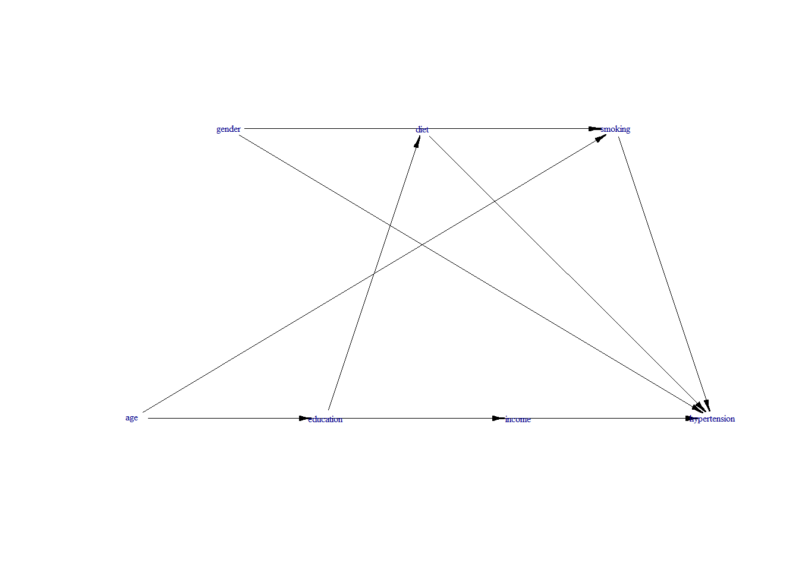

devtools::install_github('osofr/simcausal', build_vignettes = FALSE)2 Effect Modification Analysis within the Propensity score Framework
2.1 Simulation
First, we need to install the R package simcausal, which can be obtained from GitHub:
We will use the following data-generation model:
require(simcausal)
D <- DAG.empty()
D <- D +
node("age", distr = "rnorm",
mean = 2, sd = 4) +
node("gender", distr = "rbern",
prob = plogis(4)) +
node("education", distr = "rbern",
prob = plogis(3 + 5* age)) +
node("diet", distr = "rbern",
prob = plogis(1 -3 * education)) +
node("income", distr = "rbern",
prob = plogis(2 - 5 * education - 4 * age)) +
node("smoking", distr = "rbern",
prob = plogis(1 + 1.2 * gender + 2 * age)) +
node("hypertension", distr = "rbern",
prob = plogis(1 + log(3) * diet +
log(1.3) * age +
log(3.5) * smoking +
log(0.5) * gender))
Dset <- set.DAG(D)
plotDAG(Dset)
We can now generate an example dataset:
Obs.Data <- sim(DAG = Dset, n = 50000, rndseed = 123)2.2 Effect measure assessment via adding interaction term
Below, we estimate a logistic regression model to assess whether the effect of smoking (the exposure) on hypertension is modified by income. The covariates age and gender are confounders.
Obs.Data$smoking <- as.character(Obs.Data$smoking)
Obs.Data$income <- as.factor(Obs.Data$income)
Obs.Data$income <- relevel(Obs.Data$income, ref = "1")
fit.w.em <- glm(hypertension ~ smoking * income + age + gender,
family = binomial(link = "logit"), data = Obs.Data)
require(jtools)
results.model <- summ(fit.w.em, model.info = FALSE,
model.fit = FALSE,
exp = TRUE)
results.model| exp(Est.) | 2.5% | 97.5% | z val. | p | |
|---|---|---|---|---|---|
| (Intercept) | 5.46 | 4.37 | 6.82 | 14.97 | 0.00 |
| smoking1 | 2.93 | 2.60 | 3.30 | 17.69 | 0.00 |
| income0 | 0.48 | 0.41 | 0.57 | -8.28 | 0.00 |
| age | 1.29 | 1.27 | 1.31 | 36.77 | 0.00 |
| gender | 0.54 | 0.43 | 0.67 | -5.55 | 0.00 |
| smoking1:income0 | 1.27 | 1.04 | 1.56 | 2.33 | 0.02 |
| Standard errors: MLE |
The interaction term in results.model is significant.
Presentation of effect measures
require(interactionR)
em.object <- interactionR(fit.w.em,
exposure_names = c("income0", "smoking1"),
ci.type = "mover", ci.level = 0.95,
em = TRUE, recode = FALSE)| Measures | Estimates | CI.ll | CI.ul | p |
|---|---|---|---|---|
| OR(smoking1 on outcome [income0==0] | 2.93 | 2.60 | 3.30 | 0.00 |
| OR(smoking1 on outcome [income0==1] | 3.72 | 3.14 | 4.41 | 0.00 |
| Multiplicative scale | 1.27 | 1.04 | 1.56 | 0.02 |